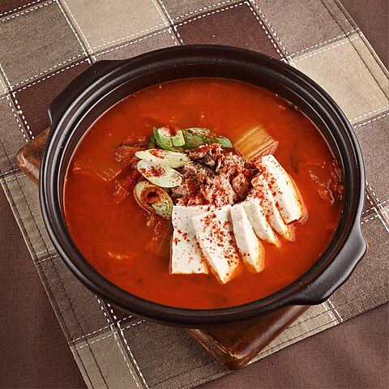

Kimchi Jjigae

Photo by 한국농수산식품유통공사, KOGL Type 1, Link
Description
Kimchi Jjigae (Kimchi Stew) is a traditional Korean stew primarily consisting of Fermented Cabbage and Pork Belly. The spicy and sour flavours of the cabbage pair especially well with the rich fat of the pork belly. Pair with a bowl of rice for a simple meal
Ingredients
- 1 cup chopped Kimchi (Fermented Cabbage)
- 1/2 pound sliced Pork Belly
- 1 spoon Gochujang
- 1 pkg Silken Tofu
- 1 spoon Doenjang
- 2 spoon Soy Sauce
- 2 cloves chopped garlic
- 1 Egg
Steps
- In a pot on medium heat, stir fry the pork, doenjang, and kimchi until the pork is cooked. Season with salt.
- Fill the pot with water, enough to cover the cooked ingredients and 1-2 inches higher.
- Mix in gochujang and soy sauce.
- Bring heat to high, and lower to medium low once boiling. Simmer for 10 minutes.
- Cut silken tofu into bite sized pieces. Add to pot with garlic. Simmer for an additional 10 minutes.
- In the last 2-3 minutes, crack an egg an add it to the pot.
- Season with salt/soy sauce/sesame oil and garnish with chopped green onion.
- Serve and Enjoy!